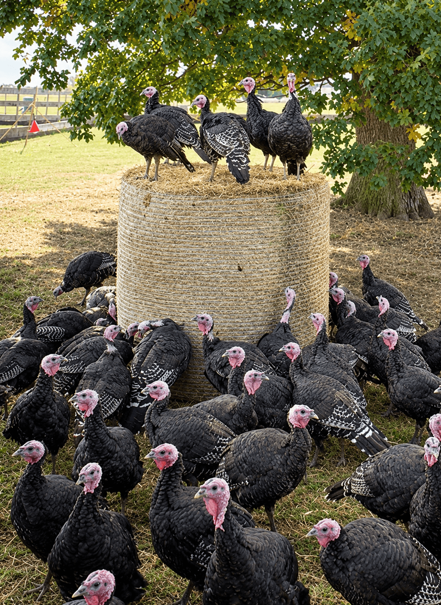
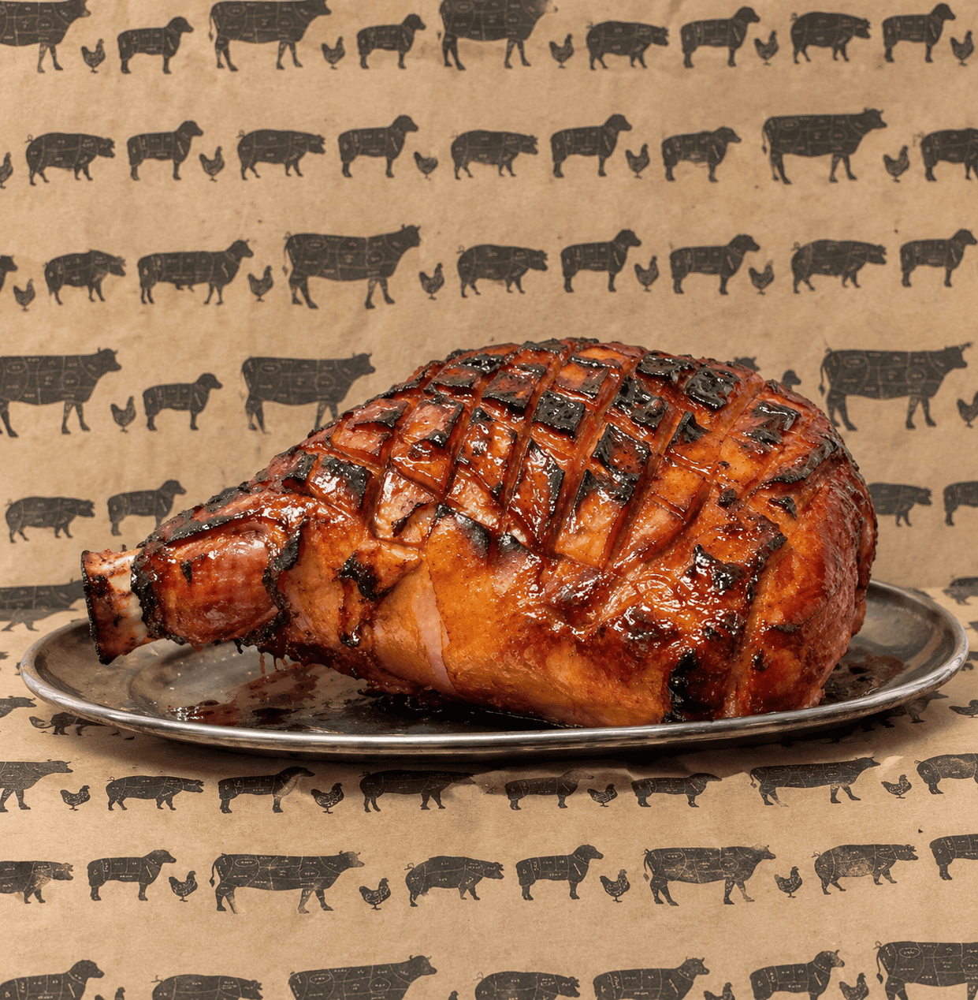
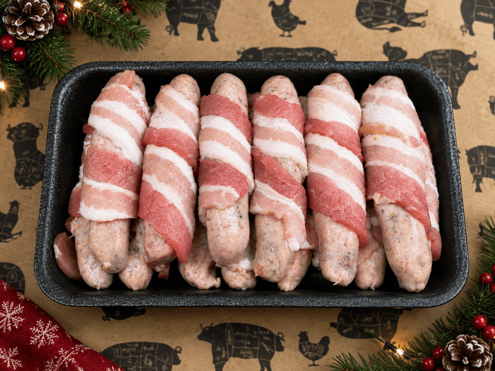
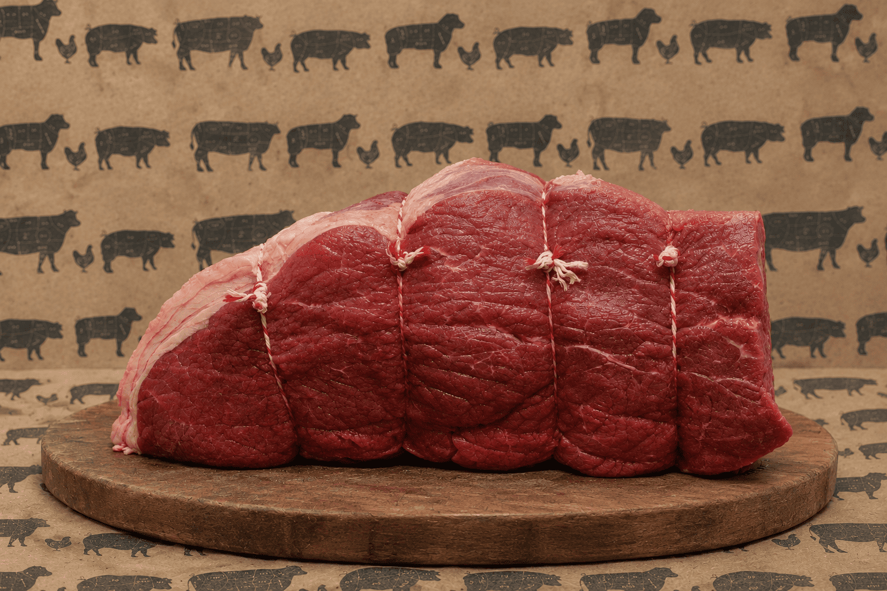

Cooked Hams
Our range of traditionally cooked hams is available in honey roasted, smoked and classic breaded varieties. Choose from boneless joints or bone-in hams, with something to suit every taste and preference over the festive period.
This Christmas we're proud to continue our decade-long partnership with Bridgers Farm in Hurstpierpoint to ensure our customers receive the highest quality traditionally reared turkeys whether it be whole turkeys or turkey crown. Bridgers Farm is the only turkey producer in Sussex to hold the prestigious Golden Turkey Quality Assurance accreditation, recognising its high standards of bird welfare, quality and flavour.
Raised for 22 weeks, these turkeys are given the time to develop naturally and comfortable before each bird is traditionally hand-plucked and hung to achieve the desired quality. For those who prefer an alternative to a whole turkey, we also offer boned and rolled turkey crowns, providing the same great flavour in a smaller, more convenient joint. We're delighted to continue offering our customers a quality traditional Christmas turkey and appreciate everyone's continued support this year.

[ Turkey photo — drop turkey.png here ]Prices are for whole birds. Order early - turkeys sell out every year.

[ Cooked ham photo ]Our range of traditionally cooked hams is available in honey roasted, smoked and classic breaded varieties. Choose from boneless joints or bone-in hams, with something to suit every taste and preference over the festive period.
We provide an assortment of locally sourced gammons available in cooked and smoked varieties. Choose from a flexible range of weights to suit your requirements, with options available for all sizes of Christmas gatherings.

[ Pigs in blankets photo ]A staple of any Christmas dinner, our pigs in blankets are prepared in-store by our team. In the week leading up to Christmas, our staff will prepare over 5,000 pigs in blankets, wrapping each one by hand to ensure they're ready for the festive celebrations.
If turkey isn't quite what you're looking for, our poultry range extends to regulars like locally sourced duck and geese. We also have capons available to order for those looking for something a little different this Christmas.

[ Topside of beef photo ]We continue to offer our regular range of locally sourced Surrey Hills beef throughout the festive period. Choose from our usual selection of roasting joints, including rolled sirloin, ribs of beef, topside and more. All sourced with quality in mind, the array of traditional cuts and sizes are here to fit your requirements.
Christmas orders can be collected on Wednesday 23rd December (7am–5pm) or Thursday 24th December (7am–1pm).
Feeds 10–12 people
£145
Most Popular
Feeds 14+ people
£215
Feeds 6–8 people
£100
To order your hamper, call us on 01342 844666 or visit us in store.
Call us on 01342 844666 or pop in to the shop — we'd love to help make your Christmas special.
Call Now